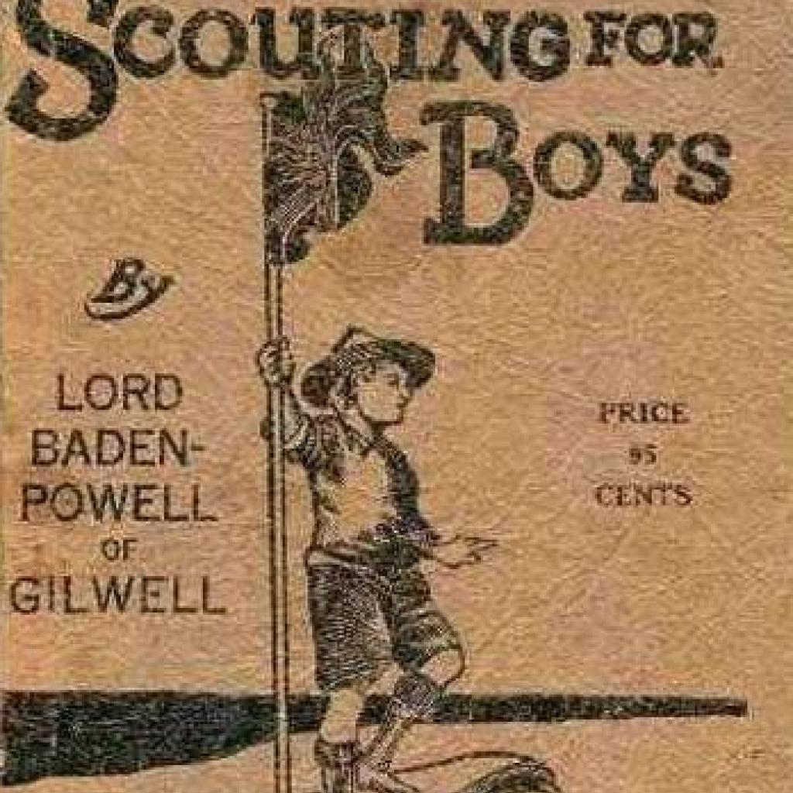
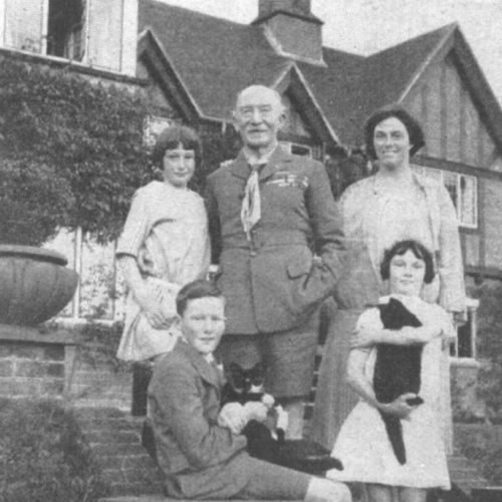
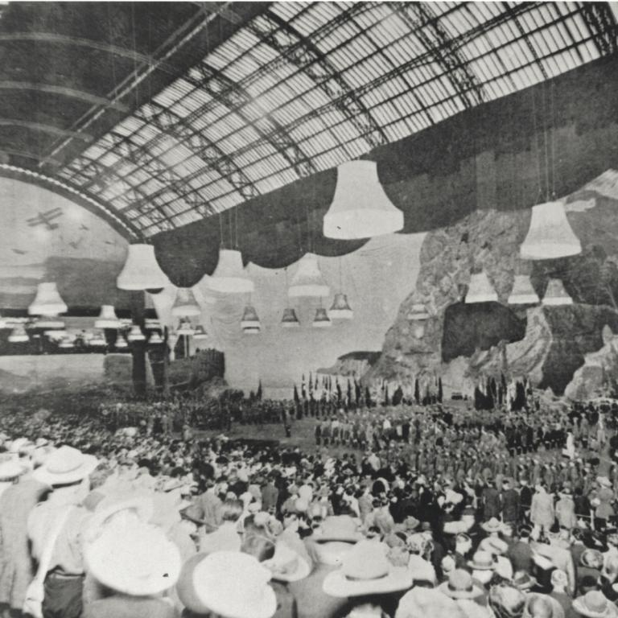
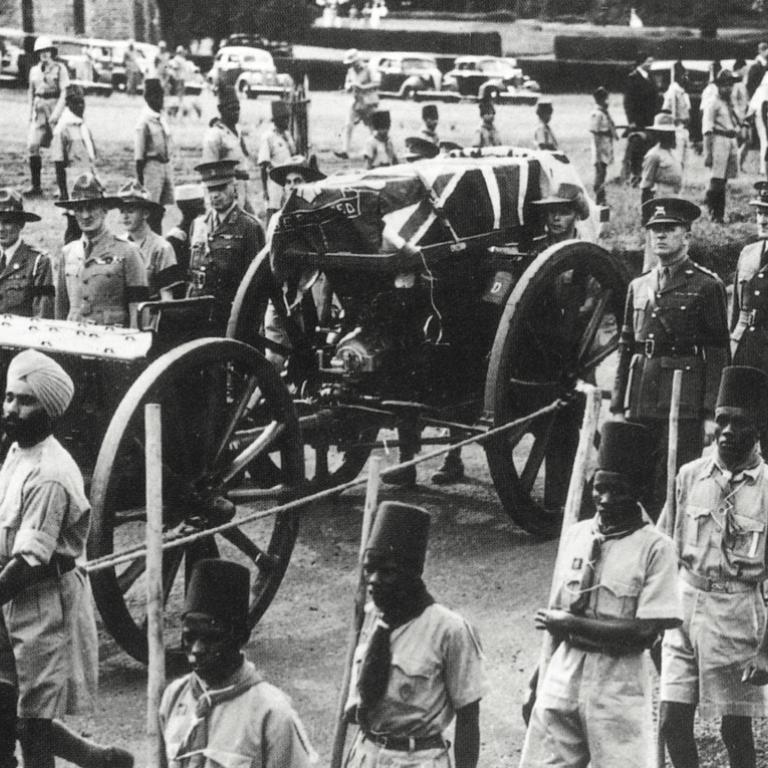

Born Robert Stephenson Smyth Baden-Powell in London on 22 February 1857, B-P was the son of an Oxford University professor and the eighth of ten children.
B-P received his early education from his mother, and later won a scholarship to the Charterhouse School, one of Britain’s most prestigious institutes.
At Charterhouse, he began to turn his attention to the great outdoors, hiding out in the woods around the school to track wildlife, catch, and cook rabbits, all while being careful not to let the tell-tale smoke give his position away. Holidays with his brothers also consisted of many adventures where B-P fine-tuned his outdoor skills and craftsmanship.
Serving in the military
From 1876 to 1903, B-P served in the military, starting in India and then the Balkans, West Africa, South Africa and Malta. As a young army officer, he specialised in map-making and reconnaissance, and soon began to train other soldiers in what were essential skills for soldiers at the time.
B-P's methods were considered unorthodox. He set up small units or patrols who worked together under a single leader and made sure there was special recognition for those who did well. The proficiency badges he awarded then resembled the traditional design of the north compass point, and today’s universal Scout badge remains remarkably similar.
After a successful military campaign in South Africa, B-P returned home in 1903 a national hero.

Beginnings of the scout movement
After learning that young people were reading his books and practicing what he had written for soldiers, B-P reworked his book “Aids to Scouting” for a younger audience. This became “Scouting for Boys”.
In 1907, he organised what is now known as the first experimental camp on Brownsea Island, off the coast of Dorset, where he put some of his ideas into practice. He brought together 20 boys from different economic backgrounds and took them camping. This event marked the start of the Scout Movement, and is commemorated with a foundation stone on the island.
“Scouting for Boys” had been written as a training guide for existing youth organisations, but it soon became the handbook of the new Scouting Movement. The book has since been translated into all of the world’s major languages.

Family Life
After retiring from the army in 1910 to devote his life to the Scout Movement, B-P travelled the world to inspire young people. Two years later, he married Olave St Clair Soames, who like her husband was also born on 22 February.
Olave was B-P’s constant companion and supporter, as the two worked closely around the development of the Scout Movement. She would later become World Chief Guide and co-founder of the Girl Guides Movement.
The couple went on to have three children: Peter, Heather, and Betty.

Chief Scout of the world
By 1920, the Scout Movement was large enough to hold its first mass gathering, later known as a Jamboree. Close to 8,000 Scouts from 34 countries gathered for the first World Scout Jamboree beneath the glass-covered dome of London’s Olympia – the floor covered in earth especially for the occasion so that Scouts could pitch their tents. As the event drew to a close, B-P was acclaimed the Chief Scout of the World, a title that he would hold until his death.
Nine years later, at the 3rd World Scout Jamboree, the Prince of Wales announced that B-P would be given a peerage. B-P took the title of Baron Baden-Powell of Gilwell, honouring Gilwell Park as the location of the international training centre he had established for Scout Leaders.

Legacy
With his health declining, B-P returned to Africa in 1938 to live in semi-retirement in the shadow of Mount Kenya at Nyeri.
B-P died on 8 January 1941 at the age of 83. He had written a farewell message for Scouts to be published only after his death, in which he urged them to “try and leave this world a little better than you found it”.
Throughout his life, B-P inspired generations of young people. He wrote at least 32 books and received honorary degrees from at least six universities as well as numerous other orders, decorations, and 19 foreign Scout awards.
"Try and leave this world a little better than you found it."